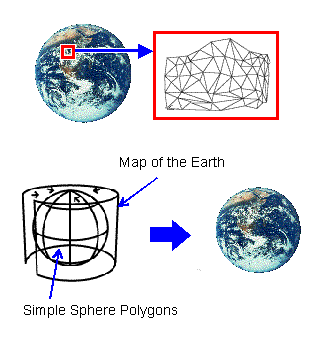

There is a limit to the shading method. For example, when you try to draw Earth, you find that there are an infinite number of surfaces including sea, continents, mountains, rivers, and so on. It is impossible to draw it by shading those surfaces because there are so many of them. There aren't enough resources to be able to handle all those surfaces in a real-time game.
Therefore, you need to use texture. Texture is simply a two-dimensional image that you paste on a model. In the case of the earth, you paste a picture of the Earth on sphere model to create an Earth model as illustrated here:

The actual technique used to paste a two-dimensional image on a three-dimensional object is called texture mapping. The texture mapping process has three steps:
The following N64 functions can be used in the texture mapping process:
Nintendo® Confidential
Copyright © 1999
Nintendo of America Inc. All Rights Reserved
Nintendo and N64 are registered trademarks of Nintendo
Last Updated March, 1999